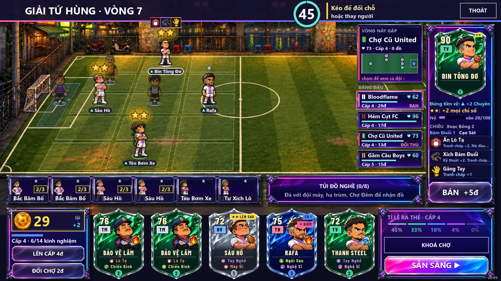
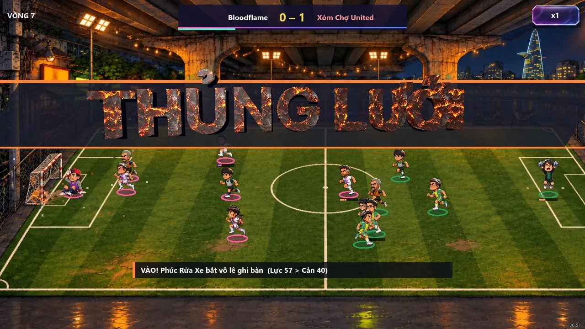
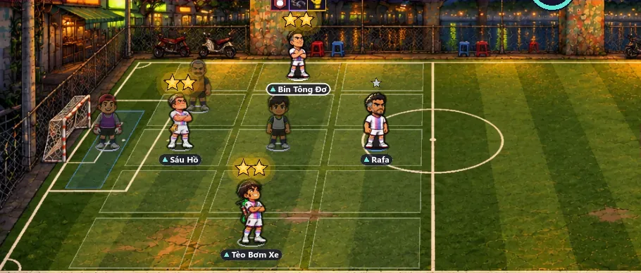
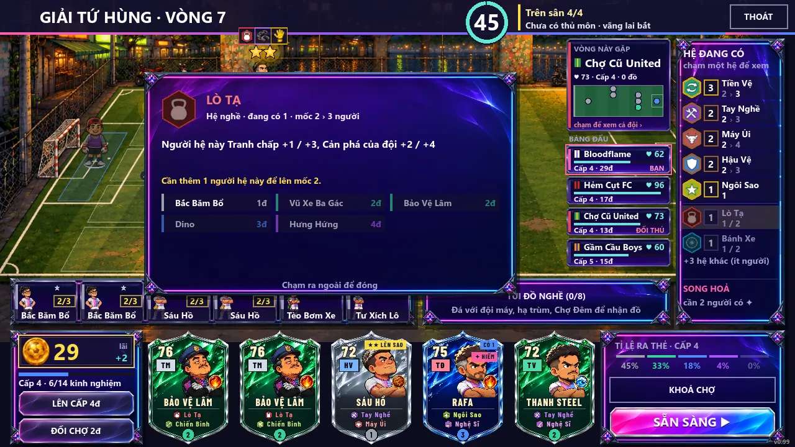
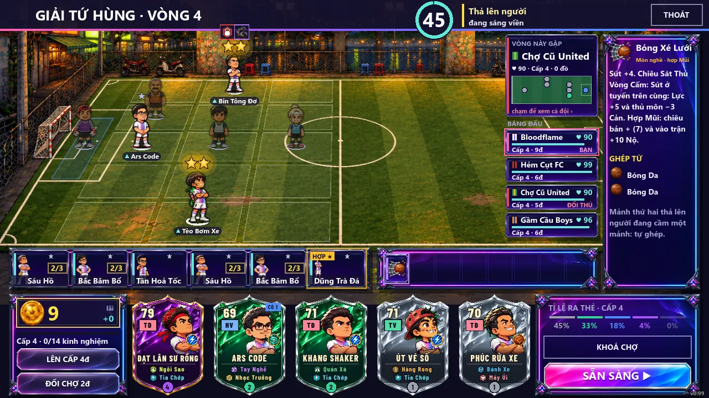
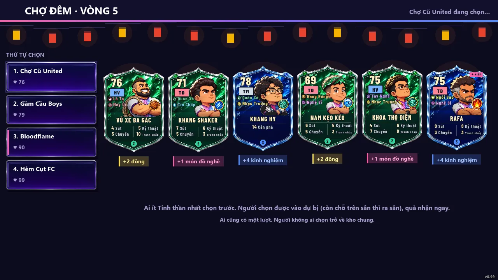
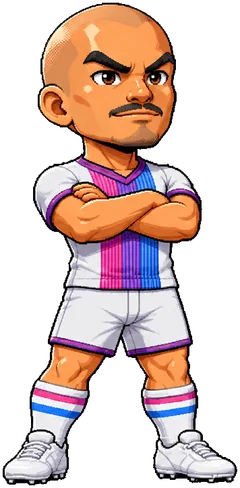
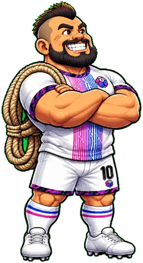
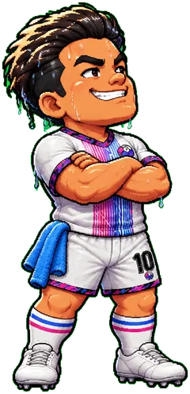
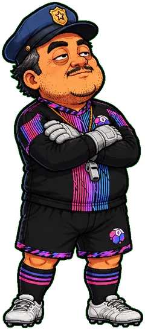

Bốn đội, một chợ cầu thủ chung. Bạn mua người, ghép sao, xếp đội và gắn đồ; trận đấu tự chạy. Mỗi đội có 100 Tinh thần, thua thì mất, về 0 là bị loại. Đội trụ lại cuối cùng vô địch.
Muốn tập trước: ở sảnh Tứ Hùng chọn CHƠI VỚI MÁY. Không cần mạng, không ảnh hưởng rank. Đã quen rồi thì đọc Tứ Hùng chuyên sâu.
Một ván thường kéo dài khoảng 17 vòng. Mỗi vòng có ba nhịp: xếp đội trong 45 giây (vòng đầu 60 giây), xem trận một hiệp 16 nhịp, rồi bảng kết quả. Bốn đội đấu chéo và đổi cặp mỗi vòng.
Còn ba đội thì đội lẻ đá với "bóng ma" của một đội khác.
Sân nhà chiếm gần hết phần trên. Cột bên phải sân là đội gặp vòng này và bảng đấu bốn đội với Tinh thần từng đội. Dưới sân là băng dự bị 6 chỗ và túi đồ nghề. Dưới cùng là số đồng, cấp đội, chợ 5 ô, tỉ lệ ra thẻ theo giá và nút SẴN SÀNG.
Mỗi vòng được 5 đồng (thắng thêm 1). Cứ 10 đồng đang giữ thì được thêm 1 đồng lãi, tối đa 5 khi giữ 50. Thắng hoặc thua liền mạch từ 2 trận cũng được thưởng thêm.

Chạm thẻ ở chợ để mua. Đủ 3 bản cùng sao thì tự ghép thành 1 bản sao cao hơn, tối đa 3 sao. 2 sao được +2 mọi chỉ số và kỹ năng lên 1 cấp; 3 sao được +4 và kỹ năng lên 2 cấp. Nhãn "2/3" cạnh sao cho biết bạn đang có mấy bản.
Người giá 1 có 22 bản trong chợ chung nên lên 3 sao là thực tế; người giá 5 chỉ có 9 bản. Đổi chợ tốn 2 đồng. Khoá chợ giữ nguyên chợ sang vòng sau.

Hậu vệ đứng tuyến sau, tiền vệ ở giữa, tiền đạo ở trên. Đúng tuyến được +2 chỉ số chính. Lệch một tuyến bị −1 mọi chỉ số, lệch hai tuyến bị −2. Kéo thả để đổi chỗ; thủ môn có ô riêng.
Đây là lỗi rẻ nhất để tránh và đắt nhất khi mắc: trong mô phỏng, cả đội đứng ngược tuyến tụt từ 39% xuống 15% số điểm, ngang với cả đội chỉ 1 sao.

Cấp từ 3 tới 6. Cấp bao nhiêu thì đưa được bấy nhiêu cầu thủ ngoài sân; ô còn trống do vãng lai yếu lấp. Lên cấp bằng cách mua kinh nghiệm: 4 đồng được 4 kinh nghiệm, và từ vòng 2 mỗi vòng được tặng 2.
Cấp càng cao, chợ càng hay ra người đắt.
| Cấp | Cần | Giá 1 | Giá 2 | Giá 3 | Giá 4 | Giá 5 |
|---|---|---|---|---|---|---|
| 3 | – | 70% | 25% | 5% | 0% | 0% |
| 4 | 6 | 45% | 33% | 18% | 4% | 0% |
| 5 | 14 | 28% | 32% | 27% | 11% | 2% |
| 6 | 30 | 14% | 21% | 31% | 23% | 11% |
Mỗi cầu thủ mang vài hệ cùng lúc: hệ nghề như Bánh Xe, Lò Tạ, Quán Xá; lối đá như Máy Ủi, Tia Chớp; và vị trí như Hậu Vệ, Tiền Đạo. Đủ số người cùng hệ trên sân thì hệ kích, người trong hệ hoặc cả đội được cộng. Hệ mới kích hiện băng "KÍCH HỆ" trên sân.
Chạm một hệ ở bảng bên phải để xem mốc và ai đang có. Trong 400 ván máy tự chơi, lối "dồn hệ", tức chọn người để kích nhiều hệ cùng lúc, về nhất nhiều nhất.

Đồ rơi sau trận đấu máy, trận trùm và ở Chợ Đêm. Hai món cơ bản trên cùng một người tự ghép thành đồ hiếm có kỹ năng. Gắn đồ hiếm cho người hợp (đúng vai hoặc đúng nghề ghi trên món) thì kỹ năng lên bản + và người đó vào trận có sẵn 10 Nộ: game báo "TRÚNG ĐỒ".
Đồ mạnh hơn cả lên 3 sao: 5 món đồ hiếm đưa một đội từ 39% lên 70% số điểm dù gắn sai người, và 82% khi gắn đúng. Đổi đồ giữa các cầu thủ lúc xếp đội không mất gì: chạm món trên đầu cầu thủ để xem chỉ số, rồi chạm người khác là chuyển sang.

Đầu vòng 5 và 11, Chợ Đêm bày người miễn phí, mỗi người kèm một quà (đồng, kinh nghiệm hoặc đồ). Đội ít Tinh thần nhất chọn trước, nên thua vài trận đầu không hẳn là xấu. Vòng 11 có quầy kèm bảo vật.
Thua một trận mất 4 + 3 × cách biệt + số vòng Tinh thần. Thua 1 bàn ở vòng 3 mất 10; thua 2 bàn ở vòng 15 mất 25. Cuối ván mỗi trận thua đau hơn nhiều so với đầu ván.

Tiền đạo đứng tuyến dưới vừa mất phần cộng vừa bị trừ. Trước khi bấm Sẵn sàng, nhìn lại từng người.
Người nào đã lên 2 sao thì hệ của người đó là hướng đi của bạn. Đội máy giỏi cũng đi theo cách này.
Đồ chỉ có tác dụng khi gắn lên người. Gắn ngay, đổi sau cũng không mất gì. Ghép đồ hiếm xong trước trùm vòng 8.
Trong 400 ván máy, lối mua kinh nghiệm từ vòng 1 đứng chót. Ba vòng đầu tiêu tiền vào người là bình thường.
Lãi chỉ có ích khi còn sống. Dưới 40 Tinh thần thì đổi chợ mạnh tay tìm người mạnh ngay vòng này; cuối ván tiêu sạch.
Đội hình cấp 6, số đo từ mô phỏng 300 trận mỗi cặp khi mọi người 2 sao. Không cần đúng từng người: cùng hệ là được.

3đ
2đ 4đ
4đ 1đ
1đ
1đ
2đBốn hậu vệ Lò Tạ cộng thủ môn Bảo Vệ Lâm cũng Lò Tạ: đủ mốc cao nhất của hệ, cả đội Cản phá cao. Hai người rẻ (Vũ, Bắc) dễ lên 3 sao. Rafa đứng mũi ghi bàn. Thắng gần tuyệt đối trước Bánh Xe và Ngôi Sao.
 2đ
2đ 5đ
5đ 3đ
3đChỉ cần 2 người Quán Xá là cả đội vào hiệp với 25 Nộ, tuyệt kỹ nổ trước đối thủ. Người rẻ nhiều, dễ lên sao. Đổi lại hàng thủ mỏng, rất sợ Lò Tạ.
3đĐủ 3 đội trưởng: họ được +3 mọi chỉ số, cả đội thêm 30 Nộ. Đây là đích đến cuối ván, không phải kế hoạch từ đầu: người giá 5 chỉ ra ở cấp 6. Giữ nền Lò Tạ rồi thay dần khi gặp.
Ván đầu cứ chơi với máy. Khi đã quen tay, vào LEO RANK để tìm trận với người thật, hoặc tạo phòng rồi đọc mã cho bạn bè.
Game bóng phủi Sài Gòn của Bloodflame Studio. Chơi miễn phí trên trình duyệt, điện thoại hay máy tính đều được. Game đang trong quá trình phát triển nên luật và số liệu có thể đổi sau mỗi bản.